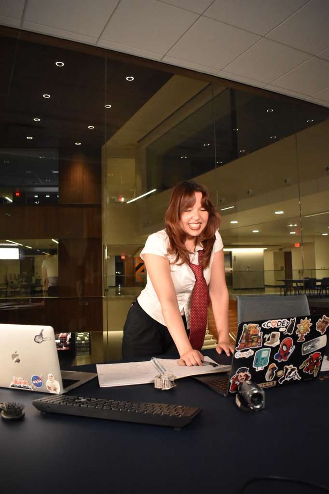
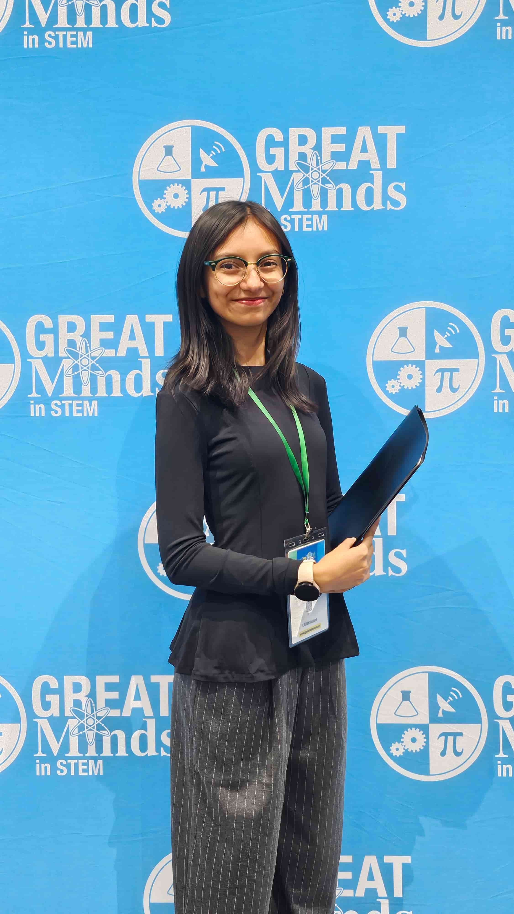
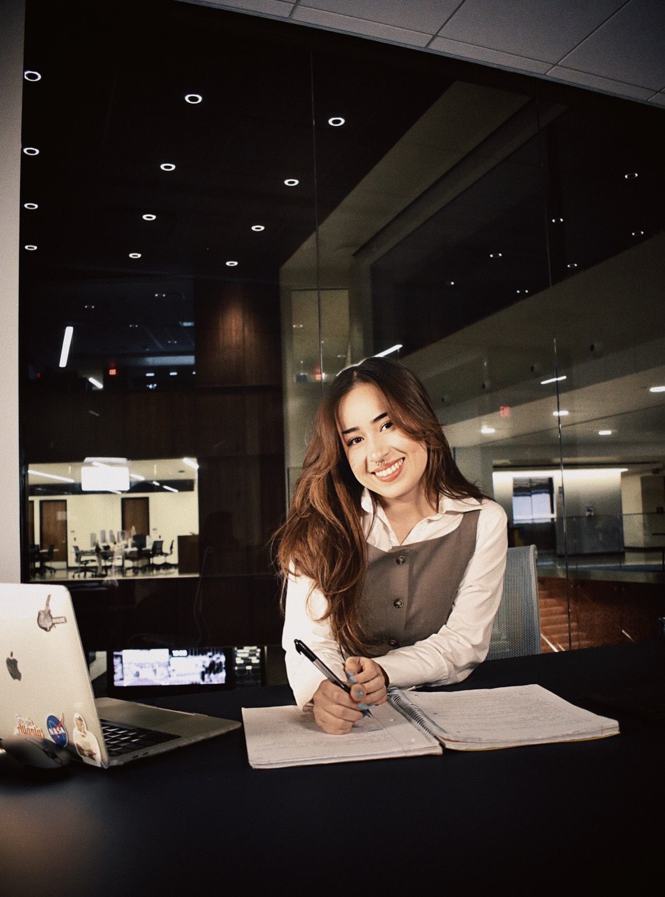
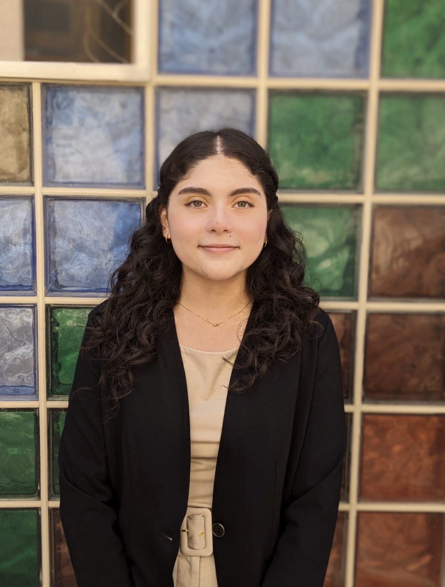
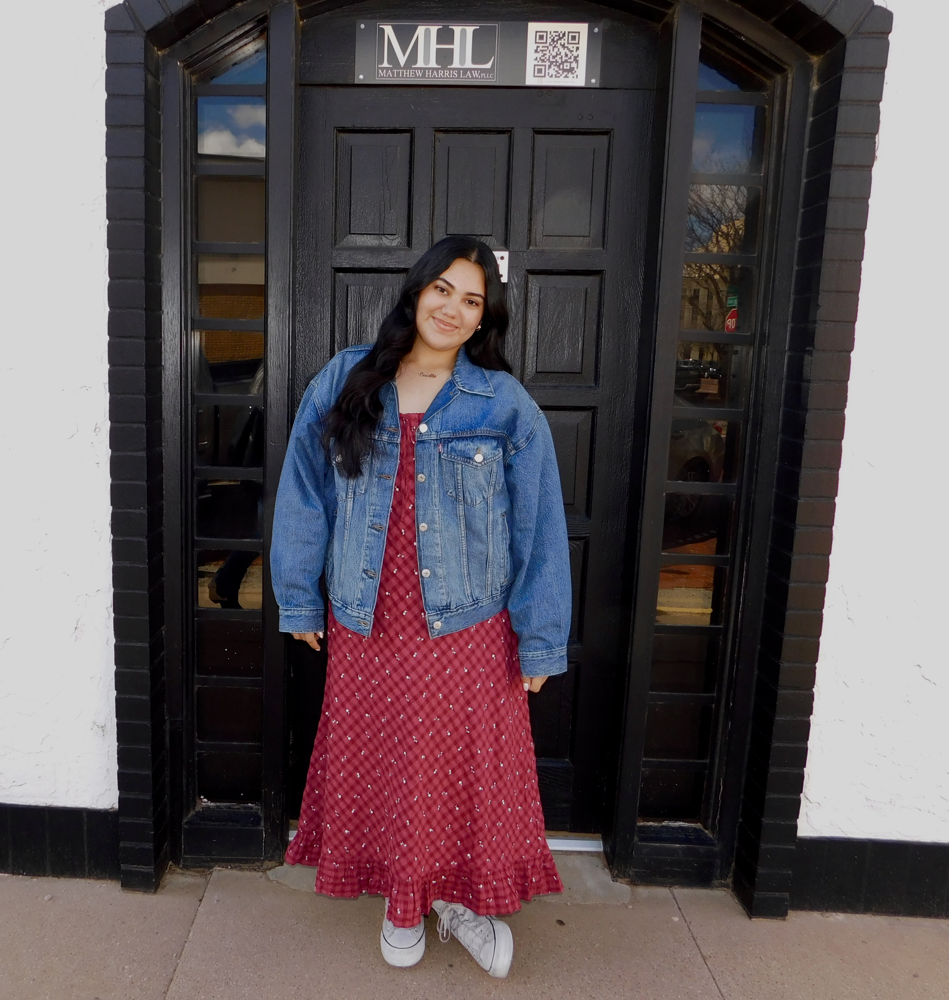
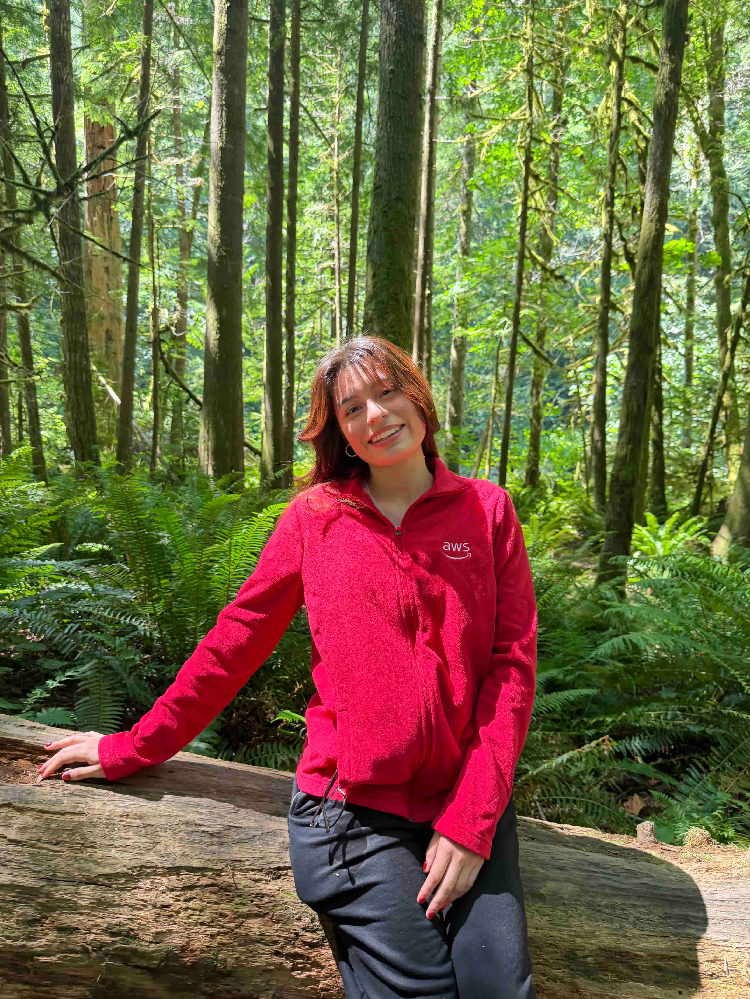
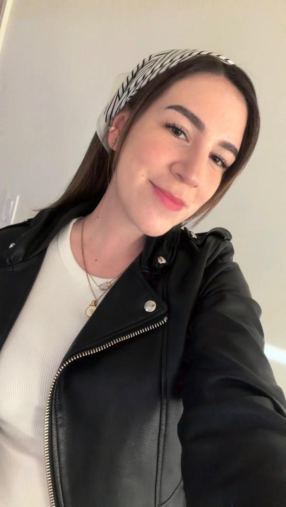
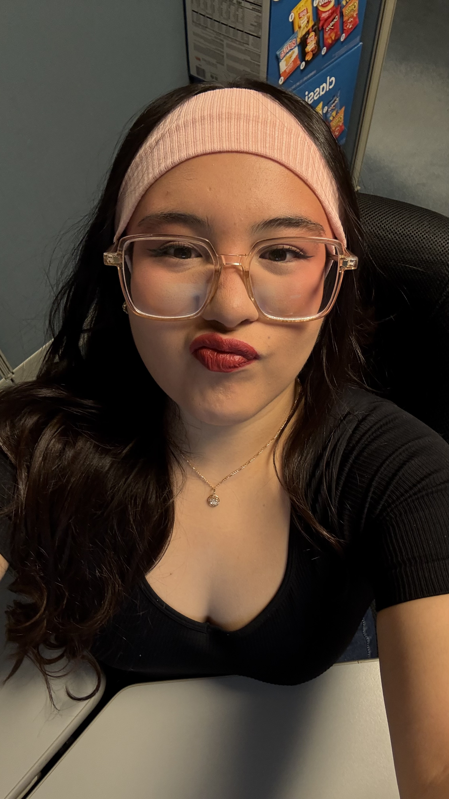

Fernanda
President
Fernanda
A non-traditional student passionate about AI, neuroscience, and software engineering, with dreams of becoming a Machine Learning Engineer. She values representation in STEM and, outside of tech, enjoys exploring, walking, and Cinepolis Takis Fuego popcorn.

Vianey
Vice President
Vianey
Joined Girls Who Code to find mentorship and a supportive community of women in tech. She is passionate about front-end development because of the creativity and loves exploring artificial intelligence. Outside of school, you'll find her at a concert, painting or working out with friends.

Sabina
Vice President
Sabina
Interested in front-end development, data science, UI/UX, and loves object-oriented programming, believing that strong communities build strong candidates. A certified cat lady, she also enjoys superheroes, The Last of Us, coffee shops, and movie nights.

Evelyn
Community Outreach Coordinator
Evelyn
Joined Girls Who Code to grow her leadership and programming skills while connecting with inspiring people. She is passionate about combining tech with social impact and created BADAM, a web app focused on animal welfare. Outside of school, she's probably reading Man's Search for Meaning or with her pet, Atenea

Melanie
Member Outreach Coordinator
Melanie
She joined GWC because she loves the supportive community and wants to make tech spaces less intimidating. Outside of school, you'll usually find her at the gym.
Kate
Event Coordinator
Kate
Joined girls who code to be a part of a community that inspired her, and doing the same for others, is something she's excited to pour her time into. Outside of school, she loves latte art, traveling, YouTube travel vlogs, cooking, and open world video games.

Daniela
Treasurer
Daniela
Joined Girls Who Code to learn more about Computer Science topics and make connections along the way. Outside of school, she's probably at the gym or playing video games.

Paola
Historian
Paola
She joined to help other girls feel as welcomed into STEM as this club made her feel. Outside of school, she loves dancing, cooking, painting, video games, baking, and watching movies and series.
Sam
Secretary
Sam
She joined GWC to be a part of a community that encouraged and guides women throughout their CS/Engineering careers so they can be successful. Outside of school, shes probably with her friends listening to podcasts, pilates or cooking.

Caelyn
Webmaster
Caelyn
Joined Girls Who Code to create new connections and learn from inspiring women in tech. She is passionate about ethical AI and its potential to revolutionize industries. Outside of school, she's likely collecting yet another hobby, watching Adventure Time, or at the thrift store.

Cosette
Webmaster
Cosette
A computer science student with a intelligence and national security minor, she joined GWC to meet new people in tech and network (best decision ever!). Outside of school, shes probably at the rec playing volleyball or reading another book.
Johanna
Project Manager
Johanna
Joined Girls Who Code to grow her skills, collaborate with women in tech, and explore creative applications of computer science, with interests in web development, AI, and problem solving. She enjoys basketball, traveling, spending time with loved ones, and discovering new foods and cultures.

Anel
Technical Officer
Anel
An electrical engineering student with a minor in robotics, she joined GWC to be apart of a community of powerful women in STEM. She is driven to spread education, passion, and opportunities. She is probably on a new side-quest right now, at the gym, or reading.
Naomi
Technical Officer
Naomi
Joined Girls Who Code to grow her Computer Science skills while learning alongside a supportive community. She is passionate about software development and discovering new technologies. Outside of school, she's probably swimming, at the gym or eating spicy chips.

Pamela
Social Media Lead
Pamela
A non-traditional and first generational student, she joined GWC to empower women in STEM and show that everyone belongs in tech. She is a masters student studying software engineering. Outside of school, shes having a late-night drive, playing guitar or at another concert.

Ana Paula
Social Media Officer
Ana Paula
Originally a civil engineering student, she joined Girls Who Code to expand her knowledge in tech, joining a supportive community and making friends along the way. Taekwondo for 15 years and a violin player, she also loves running and spending her free time visiting coffee shops to try new drinks.

Kate
Social Media Officer
Kate
Joined Girls Who Code to learn more about Computer Science topics and make connections along the way. Outside of school, she's probably at the gym or playing video games.